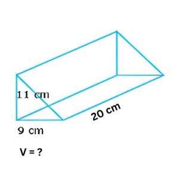
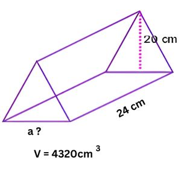
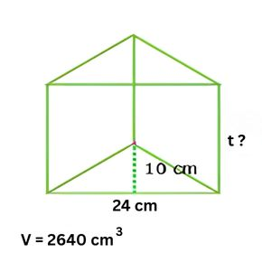

🏕️ Yuk, Jadi Arsitek Cilik!
Lihat deh tenda kemah, atap rumah, atau bahkan potongan kue! Bentuknya keren, kan? Itu adalah contoh Prisma Segitiga.
Prisma segitiga adalah bangun ruang yang punya alas dan tutup (atas) berbentuk segitiga yang sama persis. Di bab ini, kita akan belajar cara menghitung luas selimutnya dan berapa "isi" (volume) di dalamnya!
🎯 Tujuan Kita di Bab Ini
- Bisa menghitung Luas Permukaan prisma segitiga (seperti menghitung kain untuk tenda).
- Bisa menghitung Volume prisma segitiga (seperti menghitung udara di dalam tenda).
- Bisa memecahkan soal cerita yang berhubungan dengan prisma segitiga.
- Menjadi lebih teliti dan bertanggung jawab saat mengerjakan soal!
📚 Yuk, Pahami Materinya!
1. Apa itu Prisma?
Prisma adalah bangun ruang tiga dimensi yang dibatasi oleh dua bidang yang sejajar dan kongruen (sama bentuk dan ukuran) yang disebut alas dan tutup, serta beberapa bidang tegak (sisi selimut) yang menghubungkan kedua bidang tersebut.

Bagian-bagian penting prisma adalah:
- Alas dan Tutup: Ini adalah 2 sisi yang "kembar" (bentuk dan ukurannya sama persis).
- Sisi Tegak (Selimut): Ini adalah sisi-sisi yang berdiri tegak dan menghubungkan alas dan tutup.
Ciri utamanya: Bentuk alas dan tutupnya selalu sama! Karena kita belajar prisma segitiga, artinya alas dan tutupnya berbentuk segitiga.
2. Bagian-Bagian Prisma Segitiga
Ayo kita "bedah" prisma segitiga dan lihat ada apa saja di dalamnya!

-
Sisi (Bidang)
Prisma segitiga punya 5 sisi. Terdiri dari 2 sisi segitiga (alas & tutup) dan 3 sisi persegi panjang (selimutnya). -
Rusuk
Prisma segitiga punya 9 rusuk. Terdiri dari 3 rusuk di alas, 3 rusuk di tutup, dan 3 rusuk tegak. -
Titik Sudut
Prisma segitiga punya 6 titik sudut. Terdiri dari 3 titik sudut di alas dan 3 titik sudut di tutup.
Biar lebih jelas, yuk tonton video tentang sifat-sifat prisma segitiga ini!
3. Ciri-Ciri Umum Prisma
Semua prisma punya ciri-ciri umum yang bisa dihitung pakai rumus, lho!
Jika alasnya berbentuk segi-n (misalnya, segitiga berarti n=3, segiempat berarti n=4, dan seterusnya), maka:
- Jumlah Sisi = n + 2
- Jumlah Rusuk = 3 × n
- Jumlah Titik Sudut = 2 × n
Contoh Pembuktian (Prisma Segitiga, n=3):
- Sisi = 3 + 2 = 5 sisi (Benar!)
- Rusuk = 3 × 3 = 9 rusuk (Benar!)
- Titik Sudut = 2 × 3 = 6 titik sudut (Benar!)
4. Rumus Luas Permukaan (LP)
Luas permukaan adalah jumlah seluruh luas sisi-sisinya (alas, atas, dan 3 sisi tegak). Bayangkan kamu membungkus kado prisma, kita harus menghitung semua luas kertas kado yang dibutuhkan.
Rumus cepat untuk Luas Permukaan (LP) adalah:
Keterangan:
-
Luas Alas: Sesuai bentuknya, yaitu segitiga
( 12 × a × t). -
Keliling Alas: Jumlahkan panjang ketiga sisi
segitiga alasnya (
a + b + c). - Tinggi Prisma (TP): Jarak (tinggi) antara alas dan tutup.
Contoh Soal Luas Permukaan
Sebuah prisma memiliki alas berbentuk segitiga (siku-siku) dengan alas 8 cm dan tinggi segitiga 6 cm. Sisi miring alas adalah 10 cm. Panjang rusuk tegak (tinggi prisma) adalah 10 cm. Hitunglah luas permukaan prisma!
Klik untuk melihat Pembahasan
1. Hitung Luas Alas (Segitiga)
Luas Alas =
12 × alas ×
tinggi
Luas Alas =
12 × 8 cm × 6
cm = 24 cm²
2. Hitung Luas Dua Alas (Alas + Tutup)
Luas Dua Alas = 2 × 24 cm² = 48 cm²
3. Hitung Keliling Alas
Keliling Alas = 8 cm + 6 cm + 10 cm = 24 cm
4. Hitung Luas Selimut
Luas Selimut = Keliling Alas × Tinggi Prisma
Luas Selimut = 24 cm × 10 cm = 240 cm²
5. Hitung Luas Permukaan Total
LP = Luas Dua Alas + Luas Selimut
LP = 48 cm² + 240 cm² = 288 cm²
Jadi, luas permukaan prisma tersebut adalah 288 cm².
5. Rumus Volume (V)
Volume adalah "isi" dari bangun ruang itu (misalnya, berapa banyak udara di dalam tenda).
Ini adalah rumus yang paling gampang diingat:
Keterangan:
-
Luas Alas: Sama seperti tadi, rumusnya
( 12 × a × t). - Tinggi Prisma: Jarak (tinggi) antara alas dan tutup.
Contoh Soal Volume
Sebuah prisma segitiga memiliki alas berbentuk segitiga dengan alas 8 cm dan tinggi segitiga 5 cm. Tinggi prisma adalah 12 cm. Hitunglah volume prisma tersebut!
Klik untuk melihat Pembahasan
1. Hitung Luas Alas (Segitiga)
Luas Alas =
12 × alas ×
tinggi
Luas Alas =
12 × 8 cm × 5
cm = 20 cm²
2. Hitung Volume Prisma
Volume = Luas Alas × Tinggi Prisma
Volume = 20 cm² × 12 cm = 240 cm³
Jadi, volume prisma tersebut adalah 240 cm³.
Penjelasan Volume dari Bangun Ruang Balok
Ada cara lain untuk memahami rumus volume prisma, yaitu dengan membandingkannya dengan balok!
Bayangkan sebuah balok. Rumus volumenya adalah:
Volume Balok = Panjang × Lebar × Tinggi
Sekarang, jika balok itu kita potong secara diagonal (miring) dari satu sudut ke sudut yang berlawanan, kita akan mendapatkan dua buah prisma segitiga yang ukurannya sama persis.
Ini berarti, volume satu prisma segitiga adalah setengah (12) dari volume balok tersebut.
Volume Prisma = 12 × (Panjang × Lebar × Tinggi)
Lalu, apa hubungannya dengan rumus
Luas Alas × Tinggi?
-
Perhatikan bagian
(Panjang × Lebar). Itu adalah luas alas balok (yang berbentuk persegi panjang). -
Alas prisma segitiga kita adalah
setengah (12)
dari alas balok, jadi
Luas Alas Prisma = 12 × Panjang × Lebar. - Tinggi prisma sama dengan tinggi balok.
Jadi, rumus
12 × (Panjang ×
Lebar × Tinggi)
bisa kita susun ulang menjadi
( 12 × Panjang ×
Lebar ) × Tinggi, yang artinya...
Nah, terbukti kan! Kedua rumus itu pada dasarnya sama.
🧠 LKPD Interaktif: Prisma Segitiga
Ayo uji pemahamanmu! Selesaikan 3 bagian latihan di bawah ini.
A. LKPD Luas Prisma Segitiga
- Siswa dapat menghitung luas permukaan prisma segitiga dengan benar.
1. Diketahui prisma segitiga memiliki panjang rusuk alas 5 cm, 12 cm, dan 13 cm. Jika tinggi prisma 8 cm, luas seluruh permukaannya adalah …
2. Luas alas segitiga prisma adalah 24 cm² dan luas selimutnya 144 cm². Maka luas permukaan prisma adalah …
3. Keliling alas sebuah prisma segitiga adalah 25 cm. Jika tinggi prisma tersebut 10 cm, berapakah luas selimutnya?
B. LKPD Volume Prisma Segitiga
- Siswa dapat menghitung volume prisma segitiga dengan tepat menggunakan berbagai cara, seperti melalui model konkret, gambar, atau rumus.
1. Perhatikan gambar prisma A. Hitunglah volumenya (V)!
2. Perhatikan gambar prisma B. Hitunglah panjang alasnya (a)!
3. Perhatikan gambar prisma D. Hitunglah tingginya (t)!
C. LKPD Soal Cerita
- Siswa dapat menyelesaikan masalah kontekstual (soal cerita) yang berkaitan dengan luas permukaan dan volume prisma segitiga dalam kehidupan sehari-hari.
1. Prisma segitiga memiliki alas segitiga dengan alas 6 cm dan tinggi 4 cm. Tinggi prisma 10 cm. Volume prisma tersebut adalah …
2. Jika luas alas segitiga suatu prisma adalah 30 cm² dan tingginya 12 cm, maka volumenya adalah …
3. (Pythagoras) Sebuah tenda kemah berbentuk prisma segitiga. Alas tenda (depan) berbentuk segitiga sama kaki dengan sisi miring (kaki) 5 m dan panjang alasnya 6 m. Jika panjang tenda (tinggi prisma) adalah 8 m, berapa volume udara di dalam tenda?